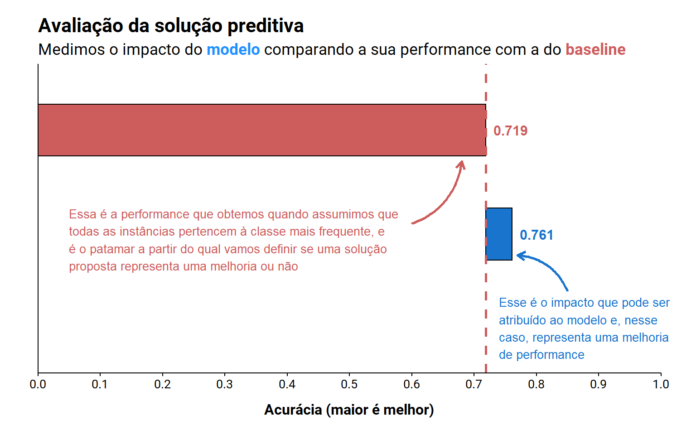
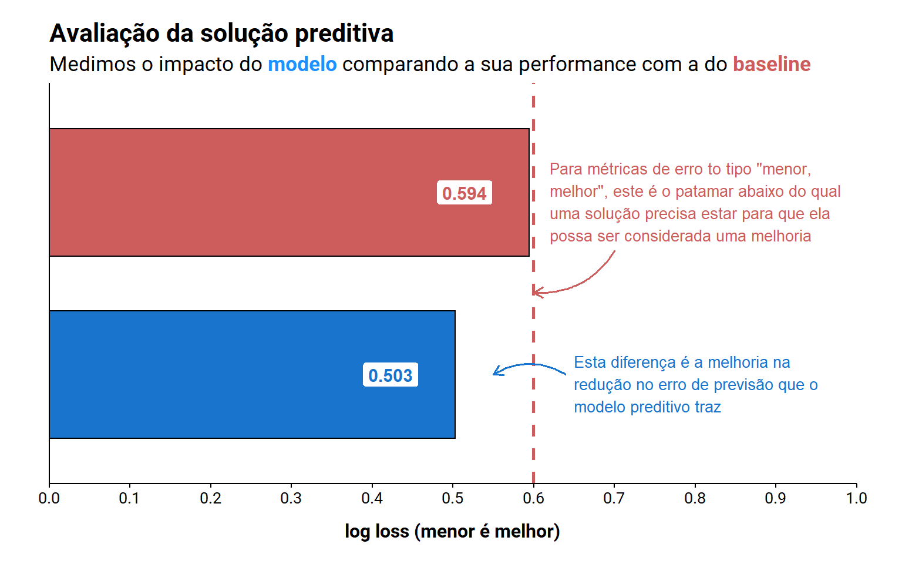
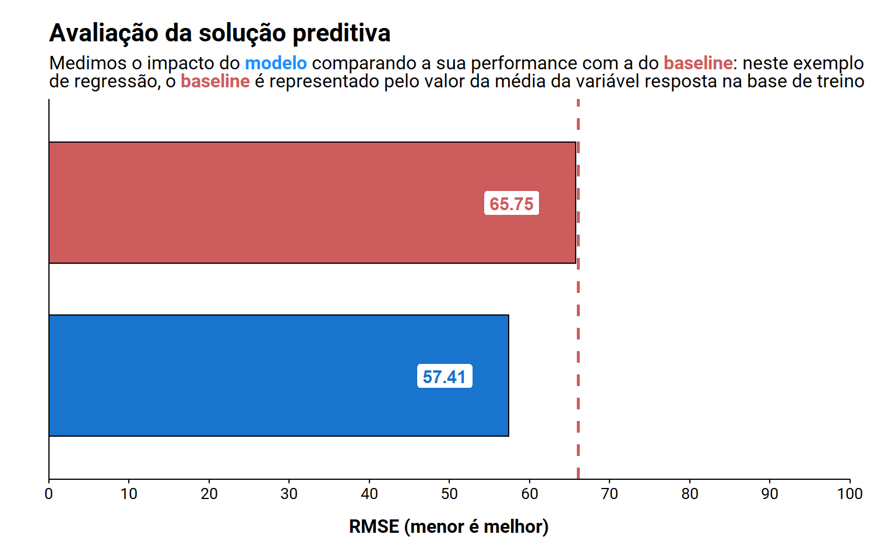
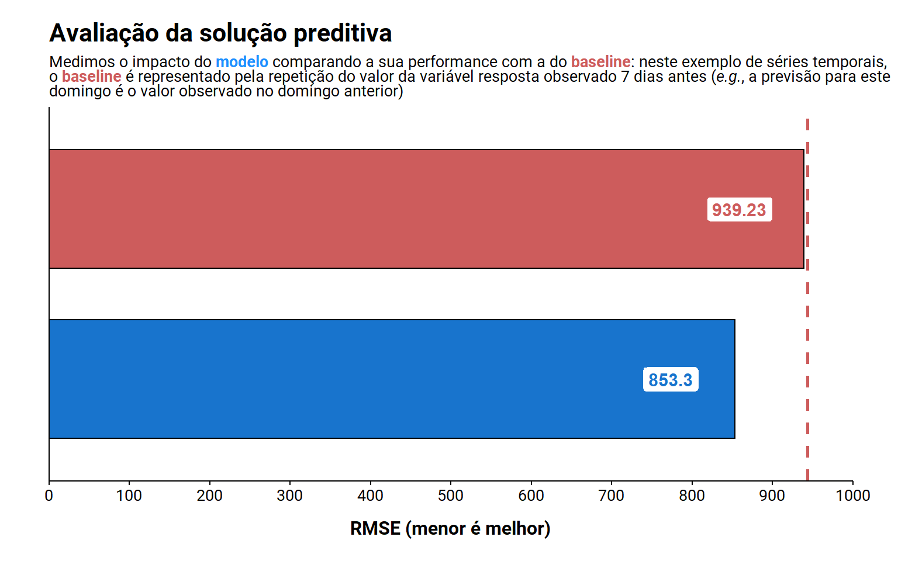

![]()
library(tidyverse) # manipulação de dados
library(tidymodels) # modelagem
library(modeldata) # dados
library(ggtext) # complementando ggplot2
########################################################################################
# Separando a base em treino e teste, e criando esquema de validação cruzada #
########################################################################################
# criando um split entre treino e teste, estratificando a separação da base pelo variável
# que queremos usar no problema de classificação; além disso, setando uma constante para
# o gerador de números aleatórios para garantir que vamos conseguir reproduzir o split
set.seed(42)
split_inicial <- initial_split(data = credit_data, prop = 0.7, strata = 'Status')
# criando um esquema de validação cruzada para poder estimar a performance média do modelo
# e a sua variância
set.seed(42)
splits <- vfold_cv(data = training(split_inicial), v = 5, strata = 'Status')
########################################################################################
# Estimando a performance do baseline: prevendo a classe mais frequente #
########################################################################################
# estimando a classe mais frequente na base de treino: contando quantas vezes cada classe
# aparece dentro da variável que queremos prever e, então, tirando o nome da classe mais
# comum
classe_frequente <- training(x = split_inicial) %>%
count(Status) %>%
top_n(n = 1, wt = n) %>%
pull(Status) %>%
as.character()
# calculando a performance do baseline usando o esquema de validação cruzada - a ideia aqui
# vai ser definir que todas as instancias em cada fold pertencem à classe mais frequente na
# base de treino. Por termos estratificado a separação da base, teremos a mesma quantidade
# (aproximada) de instância em cada fold, de forma que a acurácia do baseline será identica
# entre folds, fazendo com que a variância na performance seja zero. Poderíamos ter calculado
# essa performance direto na base de treino, mas achei melhor fazer desse jeito aqui por que
# o método será similar e mais relevante quando pensamos no exemplo da regressão (onde, por
# exemplo, vamos usar a média do valor que queremos prever como o baseline)
metricas_baseline_classe <- splits %>%
mutate(
.estimate = map_int(splits, ~ sum(testing(.)$Status == 'good')) / map_int(splits, ~ nrow(testing(.))),
origem = 'baseline',
.metric = 'accuracy'
) %>%
select(id, .metric, .estimate, origem)
########################################################################################
# Ajustando e estimando a performance de um algoritmo preditivo #
########################################################################################
# criando uma regressão logística simples para o problema de classificação
## primeiro setando o algoritmo
algoritmo <- logistic_reg(penalty = 0) %>%
set_engine(engine = 'glmnet') %>%
set_mode(mode = 'classification')
## criando o pré-processamento de dados que será aplicado durante o treinamento do modelo
## não há problema definir que o dado é de treinamento aqui, pois essa receita de
## pré-processamento só será treinada durante o ajuste do modelo
data_prep <- recipe(Status ~ Income + Amount + Debt + Price + Home + Job,
data = training(x = split_inicial)) %>%
step_impute_mean(all_numeric_predictors()) %>%
step_impute_mode(all_nominal_predictors()) %>%
step_dummy(all_nominal_predictors())
## conectando os dados com o algoritmo
wf <- workflow() %>%
add_model(algoritmo) %>%
add_recipe(data_prep)
## ajustando o algoritmo
modelo <- fit_resamples(object = wf, resamples = splits,
metrics = metric_set(accuracy, mn_log_loss))
# extraindo o valor da acurácia do modelo treinado - a escolha dessa métrica é duvidosa
# para esse tipo de problema, mas o exemplo aqui é apenas ilustrativo
metricas_modelo_classe <- modelo %>%
collect_metrics(summarize = FALSE) %>%
filter(.metric == 'accuracy') %>%
mutate(origem = 'modelo') %>%
select(id, .metric, .estimate, origem)O Science em Data
Comecei a minha carreira na academia, onde tive a oportunidade de aprender algumas coisas interessantes e incorporá-las à forma de pensar. Uma delas foi a habilidade de duvidar, questionar e criticar1. Existem casos em que é muito fácil exercitar essa habilidade, mas têm vezes que a questão não é tão trivial. Ainda assim, esse tipo de exercício tende a ser inconsciente para mim. Mas o que é que isso tem haver com Ciência de Dados?
Ás vezes me parece que passamos batido, mas existe a palavra ciência no nome daquela disciplina - e a ciência nos oferece um jeito muito poderoso de pensar, testar hipóteses e avaliar o que nos é mostrado. Por exemplo: como você sabe que A é melhor do que B, que uma intervenção funciona, que não tem diferença entre duas coisas…como saber se você realmente descobriu o que você diz ter descoberto2? O método científico é a resposta para estas perguntas, e ele nos ensina a pensar de forma estruturada para ir das nossas perguntas à respostas bem sustentadas. E essas são os tipos de coisas que estão diretamente relacionadas ao nosso dia a dia enquanto pessoas que trabalham com ciência de dados.
Com isso em mente, o objetivo desse post é falar um pouco mais sobre como pensar cientificamente no nosso dia a dia. Vamos focar primeiro em uma tarefa mais cotidiana, que é a modelagem preditiva; depois, vamos ver como esse tipo de pensamento faz parte não só da modelagem, mas de qualquer outra etapa de um projeto de Ciência de Dados.
Como você sabe que seu modelo é bom?
Quando pensamos em criar um modelo preditivo, geralmente o fazemos porquê achamos que de alguma forma ele vai ser melhor do que alguma outra coisa. Mas que coisa é essa? Isso é um ponto importante termos em mente quando começamos essa tarefa: precisamos ter um ponto de partida para definir se aquilo que estamos propondo vai ser melhor do que aquilo que já temos. O nome que damos ao que já temos é baseline.
É difícil chegarmos à uma regra geral para definir esse baseline, uma vez que temos diferentes tipos de problemas de dados (e.g., classificação, regressão, séries temporais,…) e de negócio. Além disso, cada um daqueles problemas de dados têm peculiaridades distintas, que balizam a forma como devemos definir um baseline - por exemplo, a dependência temporal entre observações pode ser muito informativa para séries temporais, mas ela está ausente em problemas de regressão tradicionais. Assim, cada problema traz uma abordagem diferente para a definição do baseline, mas todas elas convergem para o mesmo objetivo: nos ajudar a definir se o modelo realmente tem o potencial de trazer um benefício sobre o que já temos.
Baselines de livro-texto
Em um problema de classificação normalmente queremos fornecer pelo menos uma categoria à uma instância. Nesse caso, nosso ponto de partida - o baseline - pode ser uma abordagem mais simples, como se não houvesse nenhuma inteligência por traz do fenômeno em questão, e ‘dizermos’ que todas as observações pertencem à uma única categoria - normalmente àquela com maior frequência em nossa base de dados. Ao ‘chutarmos’ que toda a observação pertence à categoria mais frequente, estamos definindo um ponto de partida bem otimista para nossa tarefa de modelagem3. Essa noção é representada no exemplo abaixo4.
Código
# juntando as metricas do baseline e do modelo e preparando o dado para criar a figura
metricas <- bind_rows(metricas_baseline_classe, metricas_modelo_classe) %>%
summarise(
.estimate_std = sd(.estimate), .estimate = mean(.estimate), .by = 'origem'
)
# criando a figura para visualizar os resultados
ggplot() +
scale_y_continuous(breaks = seq(from = 0, to = 1, by = 0.1), limits = c(0, 1), expand = c(0, 0)) +
scale_x_continuous(
breaks = c(0.5, 1.5), limits = c(-0.7, 2),
labels = c('Modelo', 'Baseline')
) +
labs(
title = 'Avaliação da solução preditiva',
subtitle = 'Medimos o impacto do <span style="color:#1E90FF"><b>modelo</b></span> comparando a sua performance com a do <span style="color:#CD5C5C"><b>baseline<b></span>',
y = 'Acurácia (maior é melhor)'
) +
theme(
plot.subtitle = element_markdown(size = 13),
axis.title.y = element_blank(),
axis.title.x = element_text(size = 12, face = 'bold', margin = unit(x = c(1, 0, 0, 0), units = 'lines')),
axis.text.y = element_blank(),
axis.line.y = element_line(),
axis.line.x = element_line()
) +
annotate(geom = 'rect', xmin = 1.25, xmax = 1.75, ymin = 0, fill = 'indianred', color = 'black',
ymax = filter(metricas, origem == 'baseline')$.estimate) +
annotate(geom = 'text', x = 1.5, y = filter(metricas, origem == 'baseline')$.estimate + 0.04, size = 4,
label = round(filter(metricas, origem == 'baseline')$.estimate, digits = 3), fontface = 'bold',
color = 'indianred') +
annotate(geom = 'rect', xmin = 0.25, xmax = 0.75, fill = 'dodgerblue3', color = 'black',
ymin = filter(metricas, origem == 'baseline')$.estimate,
ymax = filter(metricas, origem == 'modelo')$.estimate) +
annotate(geom = 'text', x = 0.5, y = filter(metricas, origem == 'modelo')$.estimate + 0.04, size = 4,
label = round(filter(metricas, origem == 'modelo')$.estimate, digits = 3), fontface = 'bold',
color = 'dodgerblue3') +
# texto 'Baseline' e linha de base
geom_hline(
data = filter(metricas, origem == 'baseline'), mapping = aes(yintercept = .estimate),
linewidth = 1, linetype = 2, color = 'indianred'
) +
coord_flip(clip = 'off') +
annotate(
geom = 'text', x = 0.45, y = 0.05, size = 3.5, hjust = 0, color = 'indianred',
label = str_wrap(
'Essa é a performance que obtemos quando assumimos que todas as instâncias pertencem à classe mais frequente, e é o patamar a partir do qual vamos definir se uma solução proposta representa uma melhoria ou não',
width = 60
)
) +
annotate(
geom = 'text', x = -0.4, y = 0.74, size = 3.5, hjust = 0, color = 'dodgerblue3',
label = str_wrap(
'Esse é o impacto que pode ser atribuído ao modelo e, nesse caso, representa uma melhoria de performance',
width = 30
)
) +
geom_curve(
mapping = aes(x = 0.6, xend = 1.2, y = 0.6, yend = 0.68), curvature = 0.3, color = 'indianred',
arrow = arrow(length = unit(x = 0.1, units = 'in')), linewidth = 1
) +
geom_curve(
mapping = aes(x = -0.05, xend = 0.3, y = 0.85, yend = 0.77), curvature = 0.3, color = 'dodgerblue3',
arrow = arrow(length = unit(x = 0.1, units = 'in')), linewidth = 1
)
O que esse exemplo mostra é que temos que tentar comparar a performance do modelo com o baseline, para saber se ele realmente está trazendo algum benefício. A magnitude desse benefício vai variar em função de algumas coisas, como a métrica de avaliação que resolvemos utilizar, a forma como implementamos o próprio baseline e, principalmente, a forma como essas duas coisas se combinam. Se tivéssemos predito que todas as instâncias pertenceriam à classe minoritária, teríamos uma acurácia do baseline muito menor, o que faria a performance do modelo ficar super inflada. Portanto, é super importante ter clareza de onde você quer partir com o seu baseline e como você pretende medir o benefício do que você vai desenvolver.
Uma breve nota sobre a escolha de métricas de avaliação
Esse é um tema bastante complexo e que daria um post por si só. No entanto, acho importante salientar aqui (novamente) que a utilização da acurácia no exemplo acima é meramente ilustrativo, e que você não deve (no geral) ir direto nessa métrica em um problema de classificação.
Como discutiremos mais adiante, é importante olhar para o problema de negócio que queremos resolver quando definimos o baseline e uma métrica de avaliação, a fim de selecionarmos buscarmos uma solução que vá se aproximar do valor de negócio que queremos entregar. Por exemplo, se falsos positivos são críticos para o negócio (i.e., o modelo prevê que uma instância pertence à uma classe A quando na realidade ela pertence à classe B), então talvez faça mais sentido buscar métricas que sejam mais impactadas por esse tipo de erro como a precisão e o AUCPr.
Outro exemplo relevante a se considerar é quando existe uma diferença grande na frequência entre múltiplas classes. Nesses casos, as métricas micro (calculadas com base nos valores absolutos dos erros e acertos de classificação entre todas as classes) são mais sensíveis à performance diferencial do modelo entre as classes do que as métricas macro (calculadas através da da média das métricas de performance por classe). Portanto, não subestime essa etapa no processo de um projeto de ciência de dados, pois ela é crítica para definir o sucesso da solução tanto do ponto de vista técnica quanto do de negócio.
Essa mesma lógica deve ser utilizada para todo outro passo durante a modelagem. Então, se você for otimizar os hiperparâmetros do modelo, testar novas variáveis e transformações e, até mesmo, mudar de algoritmo, você idealmente deve ter um baseline para definir o quanto cada nova tentativa está trazendo de benefício em cima do que você já tinha. Inclusive, você pode até considerar cada nova melhoria como um novo baseline que a sua próxima tentativa precisa bater. Um caso similar a este é apresentado na figura abaixo, onde aumentamos a complexidade de cada nova solução construindo sobre o que tínhamos anteriormente.
Código
library(finetune) # para o tuning de hiperparâmetros
library(ranger) # para a random forest
########################################################################################
# Otimizando a regressão logística do exemplo inicial #
########################################################################################
# otimizando a regressão logística de forma mais simples
## primeiro setando o algoritmo
algoritmo <- logistic_reg(penalty = tune(), mixture = tune()) %>%
set_engine(engine = 'glmnet') %>%
set_mode(mode = 'classification')
## repetindo o pré-processamento do exemplo inicial
data_prep <- recipe(Status ~ Income + Amount + Debt + Price + Home + Job,
data = training(x = split_inicial)) %>%
step_impute_mean(all_numeric_predictors()) %>%
step_impute_mode(all_nominal_predictors()) %>%
step_dummy(all_nominal_predictors())
## conectando os dados com o algoritmo
wf <- workflow() %>%
add_model(algoritmo) %>%
add_recipe(data_prep)
## ajustando o algoritmo
set.seed(42)
resultados <- tune_race_anova(object = wf, resamples = splits, grid = 20,
metrics = metric_set(yardstick::accuracy))
# extraindo o valor da acurácia do modelo treinado - a escolha dessa métrica é duvidosa
# para esse tipo de problema, mas o exemplo aqui é apenas ilustrativo
metricas_glmnet_otimizado <- wf %>%
finalize_workflow(parameters = select_best(x = resultados, metric = 'accuracy')) %>%
fit_resamples(resamples = splits, metrics = metric_set(yardstick::accuracy)) %>%
collect_metrics(summarize = FALSE) %>%
filter(.metric == 'accuracy') %>%
mutate(origem = 'modelo otimizado') %>%
select(id, .metric, .estimate, origem)
########################################################################################
# Mudando o algoritmo do exemplo inicial #
########################################################################################
# otimizando a regressão logística de forma mais simples
## primeiro setando o algoritmo
algoritmo <- rand_forest(trees = 300) %>%
set_engine(engine = 'ranger') %>%
set_mode(mode = 'classification')
## conectando os dados com o algoritmo
wf <- workflow() %>%
add_model(algoritmo) %>%
add_recipe(data_prep)
## ajustando o algoritmo
set.seed(42)
resultados <- fit_resamples(object = wf, resamples = splits,
metrics = metric_set(yardstick::accuracy))
# extraindo o valor da acurácia do modelo treinado - a escolha dessa métrica é duvidosa
# para esse tipo de problema, mas o exemplo aqui é apenas ilustrativo
metricas_rf <- resultados %>%
collect_metrics(summarize = FALSE) %>%
filter(.metric == 'accuracy') %>%
mutate(origem = 'rf') %>%
select(id, .metric, .estimate, origem)
########################################################################################
# Visualizando e comparando os resultados entre as duas abordagens #
########################################################################################
# colocando tudo também em um objeto para que possamos criar a figura abaixo
metricas <- bind_rows(metricas_baseline_classe, metricas_modelo_classe, metricas_glmnet_otimizado, metricas_rf) %>%
summarise(
.estimate_std = sd(.estimate), .estimate = mean(.estimate), .by = 'origem'
) %>%
mutate(
origem = fct_relevel(origem, 'modelo', 'modelo otimizado', 'rf')
)
# criando a figura para visualizar os resultados
ggplot() +
scale_y_continuous(breaks = seq(from = 0, to = 1, by = 0.1), limits = c(0, 1), expand = c(0, 0)) +
scale_x_continuous(
breaks = seq(from = 0.5, 3.5), limits = c(0, 4),
labels = c('Random\nForest', 'Regressão\nLogística (tune)', 'Regressão\nLogística', 'Baseline')
) +
labs(
title = 'Avaliação da solução preditiva',
subtitle = 'Devemos medir progressivamente o impacto das nossas soluções para determinar se elas<br>estão trazendo melhorias ou não: <span style="color:#1873CD"><b>modelo</b></span> contra <span style="color:#CD5C5C"><b>baseline<b></span>, <span style="color:#1873CD"><b>modelo</b></span> contra <span style="color:#191970"><b>otimização do mesmo</b></span><br>e <span style="color:#1873CD"><b>modelo</b></span> contra <span style="color:#CCAD00"><b>outro modelo</b></span>',
y = 'Acurácia (maior é melhor)'
) +
theme(
plot.subtitle = element_markdown(size = 11),
axis.title.y = element_blank(),
axis.title.x = element_text(size = 12, face = 'bold', margin = unit(x = c(1, 0, 0, 0), units = 'lines')),
axis.text.y = element_text(face = 'bold'),
axis.line.y = element_line(),
axis.line.x = element_line()
) +
coord_flip(clip = 'off') +
# posicao dos retangulos mostrando a performance por solução
annotate(geom = 'rect', xmin = 3.25, xmax = 3.75, ymin = 0, fill = 'indianred', color = 'black',
ymax = filter(metricas, origem == 'baseline')$.estimate) +
annotate(geom = 'rect', xmin = 2.25, xmax = 2.75, fill = 'dodgerblue3', color = 'black',
ymin = filter(metricas, origem == 'baseline')$.estimate,
ymax = filter(metricas, origem == 'modelo')$.estimate) +
annotate(geom = 'rect', xmin = 1.25, xmax = 1.75, fill = 'midnightblue', color = 'black',
ymin = filter(metricas, origem == 'baseline')$.estimate,
ymax = filter(metricas, origem == 'modelo otimizado')$.estimate) +
annotate(geom = 'rect', xmin = 0.25, xmax = 0.75, fill = 'gold3', color = 'black',
ymin = filter(metricas, origem == 'baseline')$.estimate,
ymax = filter(metricas, origem == 'rf')$.estimate) +
# texto 'Baseline' e linha de base
geom_hline(
data = filter(metricas, origem == 'baseline'), mapping = aes(yintercept = .estimate),
linewidth = 0.5, linetype = 2, color = 'indianred'
) +
# textos com o valor de acuracia por solução
annotate(geom = 'text', x = 3.5, y = filter(metricas, origem == 'baseline')$.estimate + 0.07, size = 4,
label = round(filter(metricas, origem == 'baseline')$.estimate, digits = 4), fontface = 'bold',
color = 'indianred') +
annotate(geom = 'text', x = 2.5, y = filter(metricas, origem == 'modelo')$.estimate + 0.07, size = 4,
label = round(filter(metricas, origem == 'modelo')$.estimate, digits = 4), fontface = 'bold',
color = 'dodgerblue3') +
annotate(geom = 'text', x = 1.5, y = filter(metricas, origem == 'modelo otimizado')$.estimate + 0.07, size = 4,
label = round(filter(metricas, origem == 'modelo otimizado')$.estimate, digits = 4), fontface = 'bold',
color = 'midnightblue') +
annotate(geom = 'text', x = 0.5, y = filter(metricas, origem == 'rf')$.estimate + 0.07, size = 4,
label = round(filter(metricas, origem == 'rf')$.estimate, digits = 4), fontface = 'bold',
color = 'gold3') +
# textos explicativos
geom_richtext(
mapping = aes(x = 2.5, y = 0.2,
label = 'Utilizar um <span style="color:#1873CD"><b>modelo</b></span> preditivo traz uma<br>melhora de performance frente ao <span style="color:#CD5C5C"><b>baseline<b></span>...'),
hjust = 0, fill = NA, label.color = NA, size = 3
) +
geom_richtext(
mapping = aes(x = 1.5, y = 0.2,
label = '...e, apesar da <span style="color:#191970"><b>otimização do modelo</b></span><br>também ser melhor que o <span style="color:#CD5C5C"><b>baseline<b></span>, ela<br>traz ganhos muito marginais quando<br>comparada à sua <span style="color:#1873CD"><b>versão normal</b></span>...'),
hjust = 0, fill = NA, label.color = NA, size = 3
) +
geom_richtext(
mapping = aes(x = 0.5, y = 0.2,
label = '...algo que também ocorre quando mudamos<br>para <span style="color:#CCAD00"><b>outro modelo</b></span>: sua performance é melhor<br>que a do <span style="color:#CD5C5C"><b>baseline<b></span>, mas não parece ser tão<br>melhor do que a do <span style="color:#1873CD"><b>modelo</b></span> mais simples.'),
hjust = 0, fill = NA, label.color = NA, size = 3
) +
# setas
geom_curve(
mapping = aes(x = 2.5, xend = 2.5, y = 0.60, yend = 0.7), curvature = -0.1, color = 'dodgerblue3',
arrow = arrow(length = unit(x = 0.1, units = 'in')), linewidth = 0.5
) +
geom_curve(
mapping = aes(x = 1.5, xend = 1.5, y = 0.58, yend = 0.7), curvature = -0.1, color = 'midnightblue',
arrow = arrow(length = unit(x = 0.1, units = 'in')), linewidth = 0.5
) +
geom_curve(
mapping = aes(x = 0.5, xend = 0.5, y = 0.63, yend = 0.7), curvature = -0.1, color = 'gold3',
arrow = arrow(length = unit(x = 0.1, units = 'in')), linewidth = 0.5
)
Até aqui temos considerado apenas a performance média de cada solução, mas não a sua variabilidade. Isso é igualmente relevante para sabermos se aquele benefício que estamos dizendo ter obtido pára de pé ou não. É nesse caso que os testes estatísticos entram para nos ajudar a definir se a solução que propomos é realmente diferente de um valor pré-determinado pelo baseline ou de uma outra solução. Para fazer esse tipo de comparação precisamos de algum tipo de réplica dos resultados da solução proposta, tal como a sua performance em cada um dos folds em uma base de validação cruzada ou seus resultados em N ajustes do algoritmo cujos pesos tenham sido inicializados aleatoriamente5. De uma forma ou de outra, o ponto importante aqui é dar mais robustez e confiança para o que quer que você diga ser uma melhoria seja, realmente, uma melhoria.
Como comparar estatisticamente duas soluções?
Vamos utilizar os resultados que obtivemos com o modelo de classificação para ilustrar dois casos nos quais poderíamos testar se uma solução proposta realmente representa uma melhoria.
Na primeira delas, vamos testar a hipótese alternativa de que a performance do modelo é superior àquela do baseline. Nese caso, vamos considerar o valor da performance do baseline como nossa hipótese nula, e utilizar um teste t para definir se a magnitude da diferença entre a performance do modelo é estatisticamente maior do que o valor (fixo) definido pelo baseline. Seguindo o exemplo que temos trabalhado até aqui, podemos ver que a Regressão Logística (padrão) traz sim uma melhora de performance quando comparado ao baseline. Portanto, isso nos assegura dizer que esta solução é sim uma melhoria frente ao que o baseline entregava. Se quiser uma explicação mais detalhada sobre testes de hipótese, você pode dar uma olhada nesse post aqui.
Código
library(gt) # tabelas
t.test(
# vamos utilizar a acuracia em cada fold de treino como uma replica em nosso teste
# estatistico
x = metricas_modelo_classe$.estimate,
# a nossa hipotese alternativa diz que o valor da acuracia é maior no modelo
# do que no baseline. Portanto, a hipótese alternative possui uma direcionalidade
# e devemos utilizar um teste unicaudal para o nosso teste estatístico
alternative = 'greater',
# a performance do baseline é praticamente idêntica em cada um dos folds de treino,
# uma vez que a separação da base foi balanceada e, portanto, tínhamos a mesma
# quantidade de instâncias da classe majoritária em cada fold. Assim, podemos utilizar
# o valor da média do baseline para ser o valor da média associado à nossa hipótese
# nula
mu = mean(metricas_baseline_classe$.estimate)
) %>%
# pegando os resultados do teste-t e colocando eles num formato mais bonito
tidy() %>%
# pegando e ordenando as colunas que quero mostrar
select(method, alternative, statistic, parameter, p.value, conf.low, estimate) %>%
# ajustando algumas colunas para ficar mais fácil criar a tabela do gt
mutate(
alternative = '(y > mu)',
p.value = ifelse(test = p.value < 0.001, yes = '< 0.001', no = p.value)
) %>%
mutate(across(where(is.double), \(x) round(x, digits = 3))) %>%
# criando a tabela do gt
gt() %>%
cols_merge(columns = c(estimate, conf.low), pattern = '{1} ({2} - Inf)') %>%
cols_label(
method = '', alternative = '', statistic = 't', parameter = 'df', p.value = 'p valor',
estimate = 'Estimativa (95% IC)'
)| t | df | p valor | Estimativa (95% IC) | ||
|---|---|---|---|---|---|
| One Sample t-test | (y > mu) | 9.35 | 4 | < 0.001 | 0.761 (0.751 - Inf) |
Outra possibilidade é testar se duas soluções são realmente diferentes uma da outra. Nesse caso, vamos testar a hipótese alternativa de que existe diferença na performance das duas soluções (i.e., tanto faz se uma é pior ou melhor que outra; ou seja, a diferença na performance das duas soluções é diferente de zero). Ainda seguindo os exemplos que temos, fizemos esse exercício comparando a solução da Regressão Logística com o Random Forest, e observamos que as duas soluções são estatisticamente similares - apesar da figura que tínhamos visto acima sugerir que a Random Forest seria uma opção ligeiramente melhor. Esse tipo de teste e aquele apresentado acima podem ser aplicados à praticamente qualquer tipo de solução que você desenvolver, e são importantes para nos ajudar a definir quão relevante são as melhorias que dizemos trazer.
Código
# vamos agrupar os dados de performance da regressão logística e da random forest em
# uma mesma tabela, pareando os resultados obtidos fold a fold (uma vez que utilizamos
# o mesmo esquema de validação cruzada para treinar e avaliar cada algoritmo)
inner_join(
x = select(metricas_modelo_classe, id, estimate = .estimate),
y = select(metricas_rf, id, estimate = .estimate),
by = 'id', suffix = c('_modelo', '_baseline')
) %>%
t.test(
# utilizando a acuracia da regressão logistica em cada fold de treino como replicas
# de um lado...
x = .$estimate_baseline,
# ...e aquela da random forest em cada fold de treino do outro lado
y = .$estimate_modelo,
# como não nos importamos se uma solução é melhor ou pior do que a outra, vamos utilizar
# um teste bicaudal
alternative = 'two.sided',
# a performance de cada solução foi medida nos mesmos folds de treino e, portanto,
# as instâncias não são independentes entre si. Por conta disso, vamos usar um teste-t
# pareado, onde testamos se a diferença entre pares de observações é diferente de zero
# ou não. Em outras palavras, calculamos a diferença fold à fold, e avaliamos se a
# diferença das diferenças tende a zero
paired = TRUE,
# setando o valor da hipótese nula para 0: a diferença das diferenças na performance
# das soluções tende a zero
mu = 0
) %>%
# pegando os resultados do teste-t e colocando eles num formato mais bonito
tidy() %>%
# ajustando algumas colunas para ficar mais fácil criar a tabela do gt
select(method, alternative, statistic, parameter, p.value, conf.low, estimate, conf.high) %>%
mutate(across(where(is.double), round, digits = 3)) %>%
mutate(alternative = '(baseline ≠ modelo)') %>%
# criando a tabela do gt
gt() %>%
cols_merge(columns = c(estimate, conf.low, conf.high), pattern = '{1} ({2} à {3})') %>%
cols_label(
method = '', alternative = '', statistic = 't', parameter = 'df', p.value = 'p valor',
estimate = 'Estimativa (95% IC)'
)| t | df | p valor | Estimativa (95% IC) | ||
|---|---|---|---|---|---|
| Paired t-test | (baseline ≠ modelo) | 0.813 | 4 | 0.462 | 0.004 (-0.009 à 0.016) |
Eu foquei aqui no exemplo de baseline para o caso da classificação quando queremos prever uma classe para uma instância (i.e., classificação em hard labels). O foco nesse tipo de problema aqui é porquê acredito que seja mais fácil de entender a necessidade de um baseline, além de ter um bocado de material disponível com esse tipo de exemplo e por esse ser um tipo de problema de dados bem comum no nosso dia a dia. Todavia, poderíamos pensar no mesmo processo para classificação focada na previsão de probabilidades (i.e., soft labels), em problemas de regressão e previsão de séries temporais. Não vou entrar nos detalhes sobre cada um desses casos, mas deixo uns exemplos abaixo para àquelas pessoas que tiverem a curiosidade.
Exemplo de baseline para classificação em soft labelsgb
Podemos avaliar um modelo de classificação usando métricas baseadas em classes (i.e., hard labels: acurácia, F1, sensibilidade,…) ou probabilidades (i.e., soft labels: log loss, AUC,…). O exemplo acima usa uma classificação em hard label, mas também podemos pensar em um baseline para o caso de soft labels. Abaixo trabalhamos isso de forma similar ao que fizemos até então: assumindo que a classe mais frequente tem a label 0 e a classe menos frequente a label 1, e tendo em mente que vamos prever que todas as instâncias pertencem à label 0 (i.e., classe mais frequente), vamos definir que o baseline será a probabilidade que descreve as amostras estarem mais próximas à label 0. Para isso, essa probabilidade será o complemento da frequência de ocorrência da classe mais comum6.
É importante notar que nesse caso estamos usando a log loss como métrica de avaliação, que é uma métrica onde valores menores são melhores. Nesse caso, esperamos que melhorias associadas aos modelos sejam representadas por valores de log loss menores do que aqueles observados para o baseline.
Código
########################################################################################
# Estimando a performance do baseline: probabilidade da classe mais frequente #
########################################################################################
# calculando uma probabilidade baseline para classificar todas as instâncias. Faremos
# isso considerando que a classe mais frequente corresponde à label 0 e à menos frequente
# 1; assim, se formos focar na log loss como métrica, o que queremos é que as probabilidades
# associadas à label 0 estejam o mais próximas à 0 possível, e o contrário para àquelas
# associadas à label 1. Dessa forma, precisaremos calcular a frequência da classe que vamos
# considerar como a label 0 nesse exemplo ('good') e subtrair 1 dela, de forma que o
# complemento de sua frequência será um número mais próximo de 0 e será nosso baseline
# (alguns algoritmos de árvore, como o LightGBM, estimam um ponto de partida para o
# cálculo das probabilidades na classificação de uma forma muito parecida)
proba_frequente <- training(x = split_inicial) %>%
count(Status) %>%
mutate(proba = 1 - (n / sum(n))) %>%
filter(Status == 'good') %>%
pull(proba)
# calculando a performance do baseline focado em uma métrica contínua. Vamos manter o
# padrão anterior e calcular a performance do baseline para cada fold, o que não vai fazer
# diferença para esse caso da classificação, mas fará quando pensarmos em um exemplo de
# regressão. O codigo abaixo pega a base de treino de cada fold, diz que a probabilidade
# prevista é aquela estimada acima e calcula a metrica de custo de log loss para cada
# fold
metricas_baseline_proba <- splits %>%
mutate(
train_fold = map(splits, testing),
proba = proba_frequente) %>%
select(-splits) %>%
unnest(cols = 'train_fold') %>%
group_by(id) %>%
mn_log_loss(Status, proba) %>%
select(id, .metric, .estimate) %>%
mutate(origem = 'baseline')
########################################################################################
# Quantificando a performance do modelo usando a mesma métrica #
########################################################################################
# pegando o valor do log loss para cada um dos folds e tirando o valor da média entre todos
# eles
metricas_modelo_proba <- modelo %>%
collect_metrics(summarize = FALSE) %>%
filter(.metric == 'mn_log_loss') %>%
mutate(origem = 'modelo') %>%
select(id, .metric, .estimate, origem)
########################################################################################
# Visualizando e comparando os resultados entre as duas abordagens #
########################################################################################
# colocando tudo também em um objeto para que possamos criar a figura abaixo
metricas <- bind_rows(metricas_baseline_proba, metricas_modelo_proba) %>%
summarise(
.estimate_std = sd(.estimate), .estimate = mean(.estimate), .by = 'origem'
) %>%
mutate(
origem = fct_relevel(origem, 'modelo')
)
# criando a figura para visualizar os resultados
ggplot() +
geom_col(
data = metricas, mapping = aes(x = origem, y = .estimate, fill = origem), color = 'black',
show.legend = FALSE, width = 0.7
) +
geom_label(
data = metricas, show.legend = FALSE, size = 4, fontface = 'bold',
mapping = aes(x = origem, y = .estimate, color = origem,
label = round(x = .estimate, digits = 3)),
nudge_y = -0.08
) +
scale_y_continuous(breaks = seq(from = 0, to = 1, by = 0.1), limits = c(0, 1), expand = c(0, 0)) +
scale_fill_manual(values = c('dodgerblue3', 'indianred')) +
scale_color_manual(values = c('dodgerblue3', 'indianred')) +
labs(
title = 'Avaliação da solução preditiva',
subtitle = 'Medimos o impacto do <span style="color:#1E90FF"><b>modelo</b></span> comparando a sua performance com a do <span style="color:#CD5C5C"><b>baseline<b></span>',
y = 'log loss (menor é melhor)'
) +
theme(
plot.subtitle = element_markdown(size = 13),
axis.title.y = element_blank(),
axis.title.x = element_text(size = 12, face = 'bold', margin = unit(x = c(1, 0, 0, 0), units = 'lines')),
axis.text.y = element_blank(),
axis.line.x = element_line()
) +
# texto 'Baseline' e linha de base
geom_hline(
data = filter(metricas, origem == 'baseline') + 0.005, mapping = aes(yintercept = .estimate),
linewidth = 1, linetype = 2, color = 'indianred'
) +
coord_flip(clip = 'off') +
# observacoes sobre o modelo
annotate(
geom = 'text', x = 0.95, y = 0.65, size = 3.5, hjust = 0, color = 'dodgerblue3',
label = str_wrap(
'Esta diferença é a melhoria na redução no erro de previsão que o modelo preditivo traz',
width = 35
)
) +
geom_curve(
mapping = aes(x = 1, xend = 1, y = 0.64, yend = 0.55), curvature = 0.3, color = 'dodgerblue3',
arrow = arrow(length = unit(x = 0.1, units = 'in')), linewidth = 0.7
) +
# observacao sobre o baseline
annotate(
geom = 'text', x = 1.95, y = 0.62, size = 3.5, hjust = 0, color = 'indianred',
label = str_wrap(
'Para métricas de erro to tipo "menor, melhor", este é o patamar abaixo do qual uma solução precisa estar para que ela possa ser considerada uma melhoria',
width = 40
)
) +
geom_curve(
mapping = aes(x = 1.68, xend = 1.45, y = 0.7, yend = 0.6), curvature = -0.3, color = 'indianred',
arrow = arrow(length = unit(x = 0.1, units = 'in')), linewidth = 0.7
)
Exemplo de baseline em regressão
A regressão envolve prever um valor contínuo e, portanto, podemos utilizar outro tipo de abordagem para estimar o baseline. Um jeito simples de fazer isso é utilizar a média da variável resposta para a previsão de qualquer novo valor. É importante ressaltar que o ideal é fazer isso através da base (ou fold) de treino para realizar a previsão na base de teste (ou fold de validação).
Código
########################################################################################
# Separando a base em treino e teste, e criando esquema de validação cruzada #
########################################################################################
# criando um split entre treino e teste, estratificando a separação da base pelo variável
# que queremos usar no problema de classificação; além disso, setando uma constante para
# o gerador de números aleatórios para garantir que vamos conseguir reproduzir o split
set.seed(42)
split_inicial_reg <- initial_split(data = hotel_rates, prop = 0.7, strata = 'avg_price_per_room')
# criando um esquema de validação cruzada para poder estimar a performance média do modelo
# e a sua variância
set.seed(42)
splits_reg <- vfold_cv(data = training(split_inicial_reg), v = 5, strata = 'avg_price_per_room')
########################################################################################
# Quantificando o baseline através da média #
########################################################################################
# vamos calcular a média do valor do custo por quarto em cada fold de treino e, então, vamos
# utilizar este valor para definir o que seria a nossa predicao do valor do quarto por instância
# na base de teste daquele fold (isto é, vamos parear o valor médio do fold #1 de treino com
# as instância do fold #1 de teste). Então, vamos calcular o valor do RMSE por fold e guardar
# esse valor. Note que os valores da média do custo do quarto vão variar entre os folds, de
# forma que o RMSE não será igual para todos os folds nesse caso aqui - e, portanto, o desvio
# padrão não será zero
metricas_baseline_regressao <- splits_reg %>%
mutate(
average = map_dbl(.x = splits, .f = ~ mean(training(.x)$avg_price_per_room)),
splits = map(.x = splits, .f = testing)
) %>%
unnest(cols = splits) %>%
group_by(id) %>%
rmse(avg_price_per_room, average) %>%
mutate(origem = 'baseline') %>%
select(id, .metric, .estimate, origem)
########################################################################################
# Ajustando e estimando a performance de um algoritmo preditivo #
########################################################################################
# criando uma regressão linear simples para o problema de regressão
## primeiro setando o algoritmo
algoritmo <- linear_reg() %>%
set_engine(engine = 'lm') %>%
set_mode(mode = 'regression')
## criando o pré-processamento de dados que será aplicado durante o treinamento do modelo
## não há problema definir que o dado é de treinamento aqui, pois essa receita de
## pré-processamento só será treinada durante o ajuste do modelo
data_prep <- recipe(avg_price_per_room ~ stays_in_weekend_nights + stays_in_week_nights +
near_christmas + near_new_years + country + meal + adults,
data = training(x = split_inicial_reg)) %>%
step_unknown(all_nominal_predictors()) %>%
step_other(all_nominal_predictors()) %>%
step_dummy(all_nominal_predictors())
## conectando os dados com o algoritmo
wf <- workflow() %>%
add_model(algoritmo) %>%
add_recipe(data_prep)
## ajustando o algoritmo
modelo <- fit_resamples(object = wf, resamples = splits_reg, metrics = metric_set(rmse))
# extraindo o valor do RMSE em cada fold de validação utilizando o modelo treinado
metricas_modelo_regressao <- modelo %>%
collect_metrics(summarize = FALSE) %>%
mutate(origem = 'modelo') %>%
select(id, .metric, .estimate, origem)
########################################################################################
# Visualizando e comparando os resultados entre as duas abordagens #
########################################################################################
# colocando tudo também em um objeto para que possamos criar a figura abaixo.
metricas <- bind_rows(metricas_baseline_regressao, metricas_modelo_regressao) %>%
summarise(
.estimate_std = sd(.estimate), .estimate = mean(.estimate), .by = 'origem'
) %>%
mutate(
origem = fct_relevel(origem, 'modelo')
)
# criando a figura para visualizar os resultados
ggplot() +
geom_col(
data = metricas, mapping = aes(x = origem, y = .estimate, fill = origem), color = 'black',
show.legend = FALSE, width = 0.7
) +
geom_label(
data = metricas, show.legend = FALSE, size = 4, fontface = 'bold',
mapping = aes(x = origem, y = .estimate, color = origem,
label = round(x = .estimate, digits = 2)),
nudge_y = -8
) +
scale_y_continuous(breaks = seq(from = 0, to = 100, by = 10), limits = c(0, 100), expand = c(0, 0)) +
scale_fill_manual(values = c('dodgerblue3', 'indianred')) +
scale_color_manual(values = c('dodgerblue3', 'indianred')) +
labs(
title = 'Avaliação da solução preditiva',
subtitle = 'Medimos o impacto do <span style="color:#1E90FF"><b>modelo</b></span> comparando a sua performance com a do <span style="color:#CD5C5C"><b>baseline<b></span>: neste exemplo<br>de regressão, o <span style="color:#CD5C5C"><b>baseline<b></span> é representado pelo valor da média da variável resposta na base de treino',
y = 'RMSE (menor é melhor)'
) +
theme(
plot.subtitle = element_markdown(size = 12),
axis.title.y = element_blank(),
axis.title.x = element_text(size = 12, face = 'bold', margin = unit(x = c(1, 0, 0, 0), units = 'lines')),
axis.text.y = element_blank(),
axis.line.x = element_line()
) +
# texto 'Baseline' e linha de base
geom_hline(
data = filter(metricas, origem == 'baseline'), mapping = aes(yintercept = .estimate + 0.3),
linewidth = 1, linetype = 2, color = 'indianred'
) +
coord_flip(clip = 'off')
Exemplo de baseline em séries temporais
Séries temporais são um caso especial de problema de predição, dada a dependência temporal entre observações. Por conta disso, existem algumas opções para a definição de um baseline, embora a escolha da forma dependa da características do próprio dado (e.g., sazonalidade, tendência, frequência de amostragem). No caso do exemplo abaixo, temos uma série temporal com granularidade diária, e resolvi utilizar como baseline o valor do que queremos prever que foi observado no mesmo dia da semana anterior (i.e., a previsão da quantidade de bicicletas alugadas no próximo sábado é a quantidade de bicicletas alugadas no sábado anterior). Esse tende a ser um baseline bem forte para esse tipo de dado e apesar de eu ter partido direto para ele aqui, o ideal é que você conduza algumas análises exploratórias no dado e conversas com o negócio para saber se esse tipo de coisa faz sentido.
Código
library(modeltime) # series temporais
library(timetk) # visualizacao de series temporais
########################################################################################
# Separando a base em treino e teste, e criando esquema de validação cruzada #
########################################################################################
# pegando um período mais curto de uma base com frequencia de amostragem diaria para o
# exercicio. Vamos simular aqui como se quiséssemos um modelo para prever o valor da
# variavel resposta para os proximos dias; como a base de dados está ordenada através
# das datas, basta deixar as últimas 7 observações na base de teste e o resto no treino
# além disso, não é preciso setar uma seed aqui, uma vez que o split de dados para uma
# série temporal é determinístico na dimensão do tempo
split_inicial_ts <- bike_sharing_daily %>%
filter(between(dteday, as.Date('2012-09-01'), as.Date('2012-11-01'))) %>%
time_series_split(date_var = dteday, initial = nrow(.) - 7, assess = 7)
# criando um esquema de validacao cruzada simples para avaliar a performance do algoritmo
# vamos criar N janelas deslizantes de 44 instâncias que serão usadas para treinar o
# algoritmo e as 7 observações seguintes serão usadas para testar a sua performance. O
# esquema abaixo é suficiente para criar 5 dobras para a validação cruzada e, novamente,
# não é necessário setar uma seed uma vez que a divisão da base é determinística na
# dimensão do tempo
splits_ts <- training(split_inicial_ts) %>%
time_series_cv(date_var = dteday, initial = 44, assess = 7)
########################################################################################
# Quantificando o baseline repetindo o valor observado 7 dias antes #
########################################################################################
# calculando o valor do baseline como o último valor registrado 7 dias antes; isto é, se
# quisermos prever o valor da variavel resposta na segunda-feira, vamos apenas repetir o
# valor que foi observado para ela na segunda-feira da semana anterior. Para isso, vamos
# extrair as 7 últimas observações na base de treino de cada dobra e juntar os valores
# observados para cada um dos dias com aqueles correspondentes de cada um dos 7 dias
# seguintes que estão na mesma dobra da validacao cruzada. Uma vez que consigamos fazer
# isto, basta entao calcular a metrica de erro para cada dobra
metricas_baseline_ts <- splits_ts %>%
mutate(
previsao = map(.x = splits, .f = ~ filter(training(.x), dteday >= max(dteday) - 6)),
) %>%
unnest(cols = previsao) %>%
select(id, refday = dteday, .estimate = cnt) %>%
mutate(
dteday = refday + 7
) %>%
left_join(
y = splits_ts %>%
mutate(
realizado = map(.x = splits, .f = testing)
) %>%
unnest(cols = realizado) %>%
select(id, dteday, cnt), by = c('id', 'dteday')
) %>%
group_by(id) %>%
rmse(cnt, .estimate) %>%
select(id, .metric, .estimate) %>%
mutate(origem = 'baseline')
########################################################################################
# Ajustando e estimando a performance de um algoritmo preditivo #
########################################################################################
# criando um auto arima para o problema de previsao de séries temporais
## setando o algoritmo
algoritmo <- arima_reg() %>%
set_engine(engine = 'auto_arima')
## criando o pré-processamento de dados que será aplicado durante o treinamento do modelo
## não há problema definir que o dado é de treinamento aqui, pois essa receita de
## pré-processamento só será treinada durante o ajuste do modelo
data_prep <- recipe(cnt ~ dteday + holiday + workingday,
data = training(x = split_inicial_ts)) %>%
step_mutate(
holiday = as.factor(holiday),
workingday = as.factor(workingday),
encoding = cyclic_encoding(dteday, periods = '7d')
)
## conectando os dados com o algoritmo
wf <- workflow() %>%
add_model(algoritmo) %>%
add_recipe(data_prep)
## ajustando o algoritmo
modelo <- fit_resamples(object = wf, resamples = splits_ts, metrics = metric_set(rmse))
# extraindo o valor do RMSE do modelo treinado
metricas_modelo_ts <- modelo %>%
collect_metrics(summarize = FALSE) %>%
mutate(origem = 'modelo') %>%
select(id, .metric, .estimate, origem)
########################################################################################
# Visualizando e comparando os resultados entre as duas abordagens #
########################################################################################
# colocando tudo também em um objeto para que possamos criar a figura abaixo.
metricas <- bind_rows(metricas_baseline_ts, metricas_modelo_ts) %>%
summarise(
.estimate_std = sd(.estimate), .estimate = mean(.estimate), .by = 'origem'
) %>%
mutate(
origem = fct_relevel(origem, 'modelo')
)
# criando a figura para visualizar os resultados
ggplot() +
geom_col(
data = metricas, mapping = aes(x = origem, y = .estimate, fill = origem), color = 'black',
show.legend = FALSE, width = 0.7
) +
geom_label(
data = metricas, show.legend = FALSE, size = 4, fontface = 'bold',
mapping = aes(x = origem, y = .estimate, color = origem,
label = round(x = .estimate, digits = 2)),
nudge_y = -80
) +
scale_y_continuous(breaks = seq(from = 0, to = 1000, by = 100), limits = c(0, 1000), expand = c(0, 0)) +
scale_fill_manual(values = c('dodgerblue3', 'indianred')) +
scale_color_manual(values = c('dodgerblue3', 'indianred')) +
labs(
title = 'Avaliação da solução preditiva',
subtitle = 'Medimos o impacto do <span style="color:#1E90FF"><b>modelo</b></span> comparando a sua performance com a do <span style="color:#CD5C5C"><b>baseline<b></span>: neste exemplo de séries temporais,<br>o <span style="color:#CD5C5C"><b>baseline<b></span> é representado pela repetição do valor da variável resposta observado 7 dias antes (<i>e.g.</i>, a previsão para este<br>domingo é o valor observado no domingo anterior)',
y = 'RMSE (menor é melhor)'
) +
theme(
plot.subtitle = element_markdown(size = 10),
axis.title.y = element_blank(),
axis.title.x = element_text(size = 12, face = 'bold', margin = unit(x = c(1, 0, 0, 0), units = 'lines')),
axis.text.y = element_blank(),
axis.line.x = element_line()
) +
# texto 'Baseline' e linha de base
geom_hline(
data = filter(metricas, origem == 'baseline'), mapping = aes(yintercept = .estimate + 4),
linewidth = 1, linetype = 2, color = 'indianred'
) +
coord_flip(clip = 'off')
Até aqui focamos muito naquilo que está nos livros-textos e outros materiais didáticos, além de falar no tecniquês na hora de definir um baseline. Entretanto, tem muita coisa que é igualmente relevante de considerarmos quando estamos no processo de definir um baseline, mas que normalmente não estão naquelas fontes e tendemos a aprender com o tempo. É à elas que vamos passar agora.
Isso não está nos livros…
A primeira coisa (e uma das mais importantes) é ter um olho no negócio quando formos definir um baseline. Uma forma de fazer isso é olhando o próprio dado e pensando o que faz sentido para o negócio: o exemplo que trabalhamos lá no início usa um conjunto de dados de scoring de crédito, e nosso baseline diz que todos os clientes têm um bom score. Apesar da abordagem que utilizamos no exemplo ser prática comum, talvez ela não faça sentido para o negócio: não há como premissar que por padrão a empresa deva fornecer crédito para qualquer pessoa, assim como o contrário não deve ser razoável (i.e., não fornecer crédito para ninguém).
Outra forma de pensar nessa definição do baseline é nem olhar o dado, mas buscar um benchmark do problema ou um baseline que o próprio negócio já tenha: pode ser que o objetivo da sua solução seja substituir um modelo que já é utilizado, então seu baseline pode ser a performance atual daquela solução. Isso é bastante similar ao que muitos papers que propõem algoritmos novos fazem: eles tentam bater uma ou mais métricas definidas pelo algoritmo que tenha o estado da arte para aquele problema. Um outro caso em que vi algo similar acontecer foi em um problema de previsão de séries temporais onde a pessoa mostrou que en passant que os dados que ela estava trabalhando variavam pouco, com uma diferença de menos do que 0.1 unidades entre observações sucessivas para mais do que 75% das observações na base dela. Isso poderia ter sido um ponto de partida para o baseline do problema que a pessoa estava tentando resolver, pois era um comportamento natural do dado fácil de prever no geral, mas que ela queria melhorar como um todo7.
Outra possibilidade é que a combinação entre olhar para os dados e olhar para o negócio. Conheço um caso no qual sempre que um evento A ocorria, o negócio tomava uma decisão B - e, olhando para os dados, era possível estimar que em até 75% das condições esta não era a melhor decisão a ser tomada. Nesse contexto, o objetivo da solução inicial nem tinha haver com melhorar esse processo de tomada de decisão, mas isso seria uma das consequências da solução. Portanto, uma abordagem foi utilizar àquela taxa de decisões não-ótimas como um baseline que a solução proposta deveria melhorar.
Esse mesmo processo também pode nos ajudar a definir quando simplesmente dizer não: quando as perspectivas de melhoria que uma solução vai trazer são tão baixas que talvez nem valha à pena uma tentativa. Conheço um caso no qual uma área de negócio possuía uma solução (não-analítica) para prever o custo de frete onde a taxa de erro era 5%, e eles estavam buscando por uma solução de aprendizado de máquina que chegasse a um erro menor. Nesse caso, pode ser muito difícil bater uma taxa de erro tão baixa e, talvez, uma solução de aprendizado de máquina nem seja o ideal para ajudar o negócio e/ou resolver o real problema que eles tinham ali8. No entanto, sem definir um baseline (o que vai ser e como medir) é difícil estabelecer a viabilidade de um projeto de ciência de dados, e ter aprendizado de máquina por ter não deve ser um caminho.
Para além de algoritmos preditivos
Esse tipo de mentalidade que estamos falando aqui pode ser utilizada em qualquer etapa do que quer que você esteja fazendo, sempre que você quiser testar se o que está sendo proposto é realmente uma melhoria. Pode ser que estejamos pensando na performance de um código ou no padrão de cores utilizados em uma aplicação…se soubermos o que precisa ser melhorado e o que temos atualmente, fica mais fácil definir se as contribuições que fazemos estão fazendo alguma diferença ou não. E aqui não se esqueça de variar uma coisa por vez: por exemplo, se você alterar as cores dos botões e as posições dos mesmos, fica difícil definir o quanto cada uma dessas coisas contribui para mudanças no comportamento do usuário. Portanto, construa suas melhorias em camadas ou, ainda, desenhe uma forma de testar elas de forma que você consiga decompor o quanto cada alteração proposta contribui para o resultado que você está observando. Isso pode te ajudar a priorizar uma solução ao invés de duas ou mais, dando mais agilidade ao seu desenvolvimento e à entrega do valor que você precisa fazer no fim do dia.
Nesses casos também precisamos ter em mente se aquilo que queremos melhorar realmente é uma demanda de negócio ou se é uma demanda nossa mesmo. Já vi casos em que desenvolvedores trabalharam em componentes de alguns sistemas simplesmente porque estavam incomodados com o código e queriam melhorá-lo, apesar do código estar entregando o valor que o negócio precisava e o problema que existia ser outro. Também já also similar acontecer em um outro nível: a primeira versão de um produto estava pronta mas, antes de liberá-la para os usuários e coletar feedbacks do que melhorar e por quê, o time já estava trabalhando na segunda versão com que só alterava como código rodava (e.g., usar a função A ao invés da B), não o que ele entregava. E tudo bem trabalhar nessas melhorias técnicas, mas acredito que deva haver um propósito claro e mensurável para correr atrás desse esforço.
Finalmente, acredito que esses exemplos reforçam que o processo será sempre o mesmo para definir se algo o que estamos propondo é uma melhoria ou não. Precisamos buscar comparar duas coisas tentando controlar ao máximo a diferença entre elas; se conseguirmos fazer que a única diferença seja a intervenção9 que estamos implementando (ou então conseguirmos alguma forma de controlar o efeito de outras fontes de variabilidade), então é muito plausível assumir que àquela intervenção contribui para chegar a um resultado diferente daquele que temos na condição atual10. Isso é a base do que chamamos de testes A/B, que têm toda uma formalidade para ser feita e validada, mas que muitas vezes em nosso cotidiano não precisamos ir tão fundo na teoria para começar a aplicá-los no que fazemos.
A imagem de capa desse post foi gerada por uma IA Generativa, disponibilizada através do
ideogram.ai. Para gerá-la, utilizei o prompt: A thought-provoking visual metaphor depicts a contemplative individual standing between two distinct doorways. On the left, a plain doorway with a simple sign reads “Adequate Solution,” exuding straightforwardness and stability. In contrast, the right doorway is intricately decorated, labeled “Complex Enigma,” evoking mystery and uncertainty. The person’s puzzled expression conveys their internal struggle as they weigh each choice. The ornate door’s atmosphere is enveloped in a whirlwind of ambiguous symbols and cryptic clues, foreshadowing the challenges and intricacies that await on their chosen path.
Gostaria de agradecer ao Gustavo Dimas Freitas por ler uma primeira versão deste post e pelos feedbacks dados, que ajudaram a melhorar a qualidade desse conteúdo.
Notas de rodapé
Não é no sentido ruim, mas sim no de ter bom-senso para julgar o que me é mostrado.↩︎
Isto é, algo robusto, generalizável, livre de artefatos, viéses ou frutos de relações espúrias.↩︎
Inclusive, essa é uma abordagem comum quando temos uma frequência muito desigual das categorias na base de dados, mas isso é estória para outro momento.↩︎
Vou abstrair muitas coisas nesses exemplos, como a forma como esse baseline precisa conversar com o objetivo do negócio, a métrica de avaliação, as etapas de preparação dos dados, pré-processamento e tudo o mais.↩︎
Algo que já vi ser comum para aplicações com redes neurais.↩︎
Considerando o caso da classificação binária, o objetivo aqui é simular o comportamneto do modelo em dar uma probabilidade próximo à 0 para uma instância pertencer a classe 1.↩︎
No entanto, a pessoa acabou ignorando esse fato e partindo para uma solução analítica direto.↩︎
Afinal, tais modelos são apenas um componente de um processo muito maior, e pode ser que as ineficiências estejam escondidas em outros lugares.↩︎
i.e., um tratamento↩︎
i.e., um baseline ou controle↩︎
Reuso
Citação
BibTeX
@online{marino2024,
author = {Marino, Nicholas},
title = {Tudo começa de algum lugar - até mesmo a sua solução
analítica},
date = {2024-04-12},
url = {https://nacmarino.netlify.app//posts/2024-03-08_baselines},
langid = {pt}
}
Por favor, cite este trabalho como:
Marino, Nicholas. 2024. “Tudo começa de algum lugar - até mesmo a
sua solução analítica.” April 12, 2024. https://nacmarino.netlify.app//posts/2024-03-08_baselines.